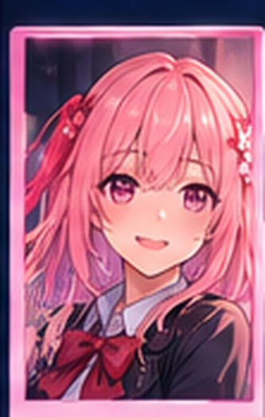

PRIMAVERA · DÍA 1
Un encuentro inesperado
Akari
En la Academia Sakura, cada respuesta importa. Acércate a cuatro personajes, descubre sus secretos y elige qué clase de relación quieres construir. Una decisión puede abrir una puerta… o cerrarla para siempre.
